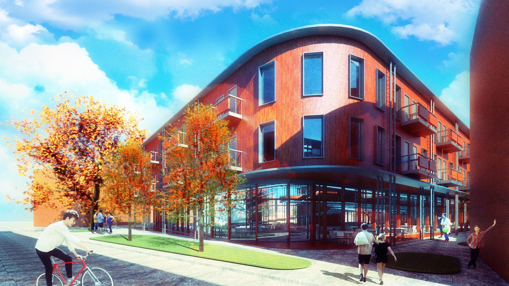
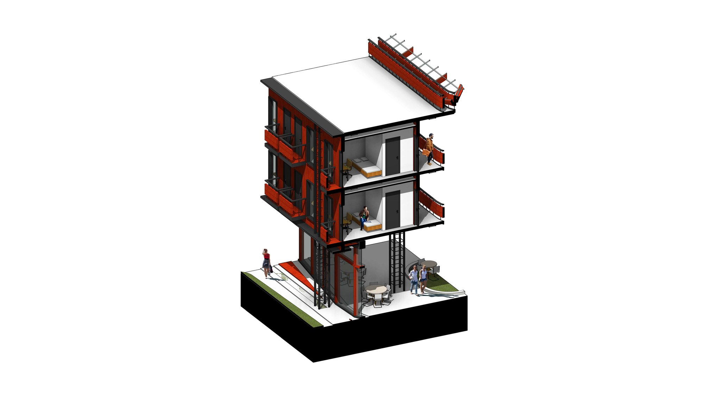
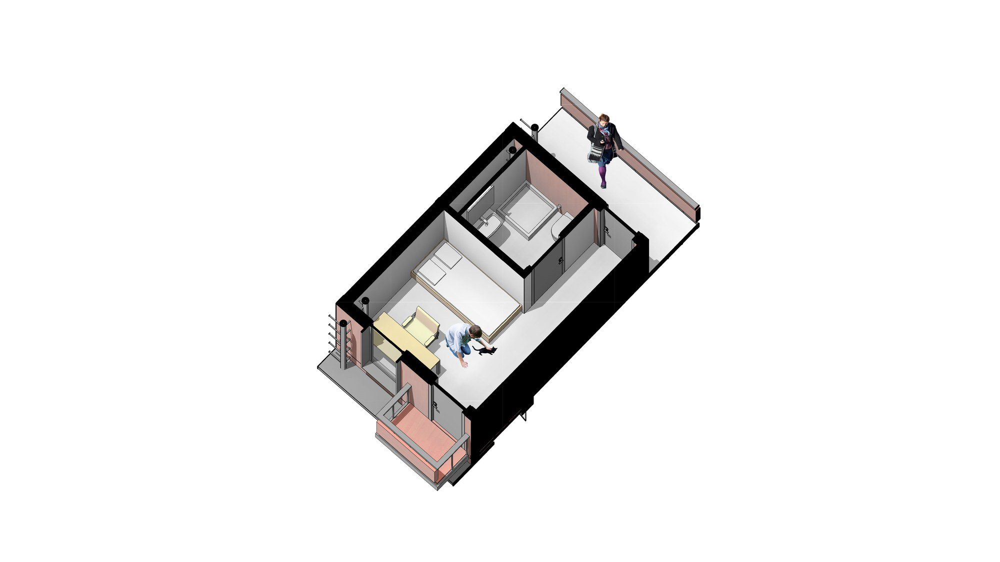
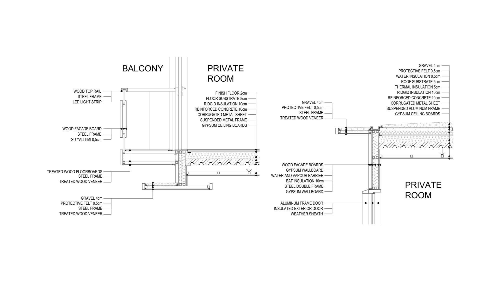
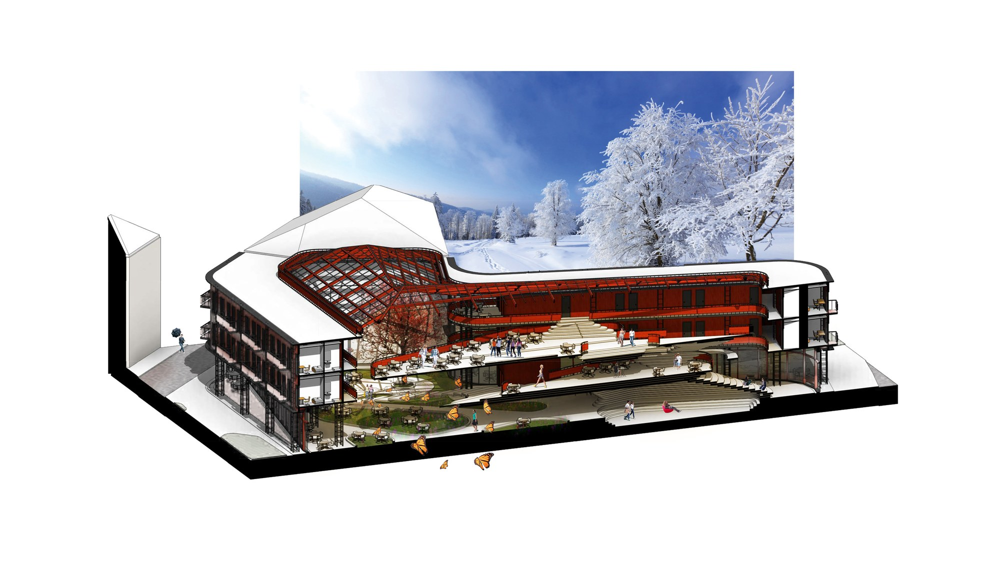
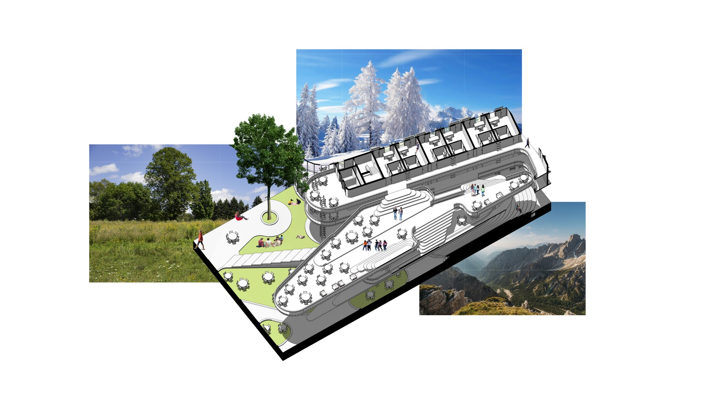
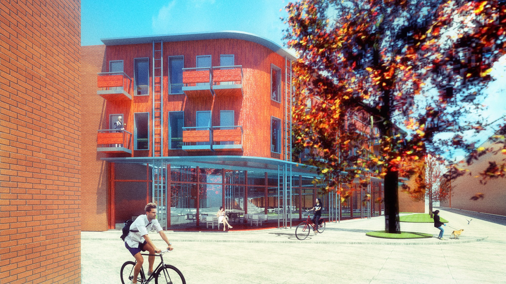
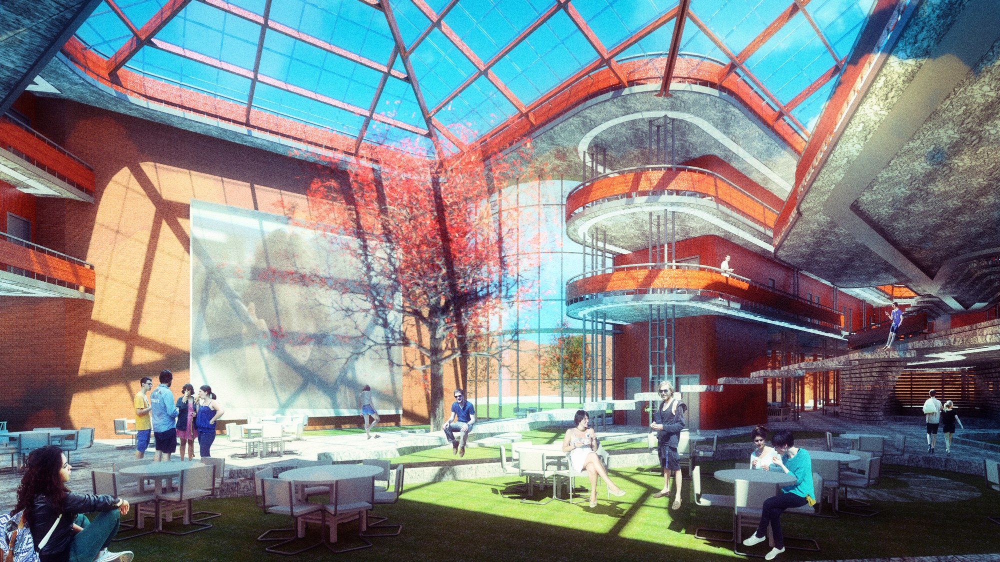
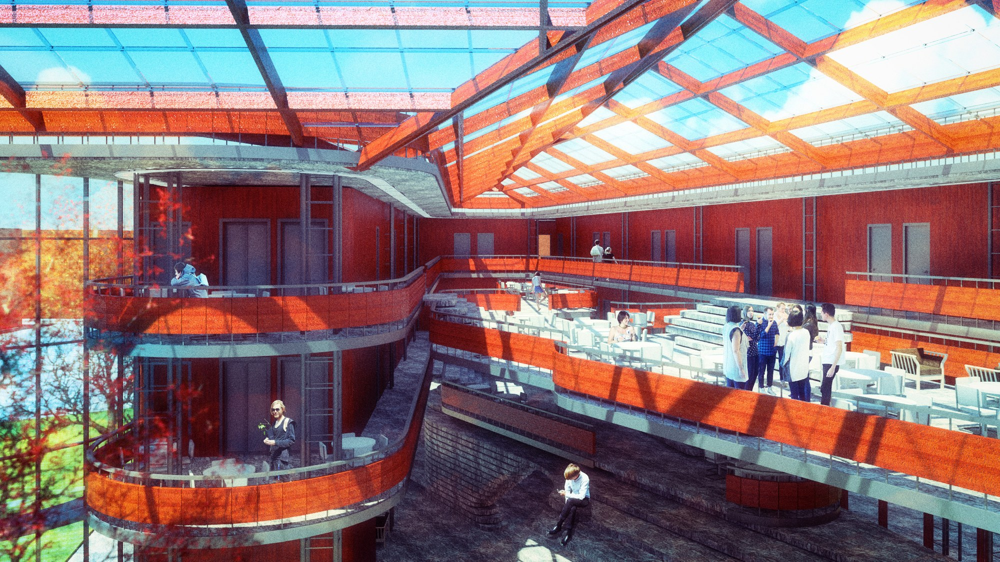
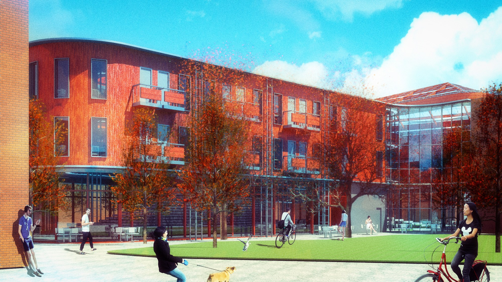

Summer Island
Barca-nation Collegian Social Center
Collegian cultural clubhouse and residence in Lund inspired by a Spanish theme. The historic city wall continues around a greenhouse garden preserving summer climate year-round (UNCC Lund University Exchange).


Photographic Sequence
01 / 04

Plate 04
Enlarge →

Plate 05
Enlarge →

Plate 06
Enlarge →

Plate 07
Enlarge →
Field Architecture Sequence • Karpov Design LLC


